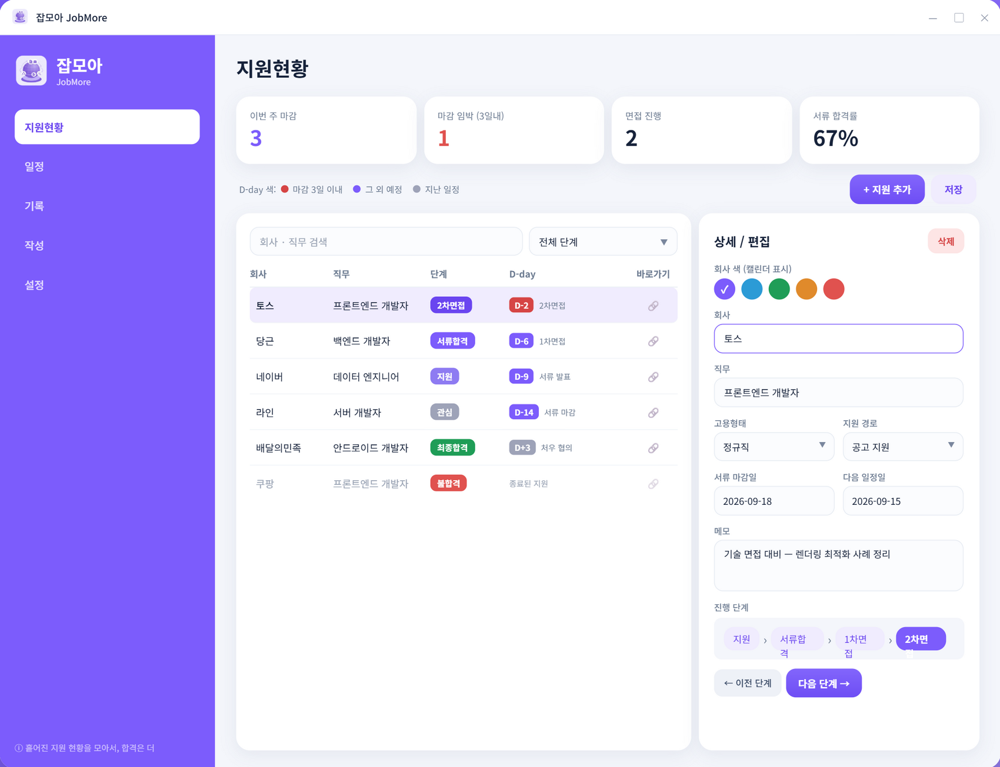

<title>잡모아 JobMore</title>
<meta name="claude:viewport-fit-sides" content="cover">
<meta name="description" content="흩어진 지원 현황을 한 곳에 모아서, 합격은 더. 취업 지원 관리 데스크톱 앱 잡모아">

<link rel="stylesheet" href="https://fonts.googleapis.com/css2?family=Gothic+A1:wght@400;500;600;700;800;900&display=swap">

<style>
/* 레이아웃: 한 섹션에 한 메시지. 설명은 글이 아니라 그 기능이 실제로 보이는 앱 화면으로 한다.
   강조는 밑줄·형광펜 대신 대표색 글자로만. 섹션 머리표는 앱의 단계 배지를 그대로 가져왔다. */
:root {
  --sig: #7C5CFC;
  --sig-deep: #6A44F0;
  --sig-mid: #8E7BF2;
  --sig-soft: #F0ECFE;
  --bg: #FFFFFF;
  --soft: #F5F6FC;
  --line: #E4E8F2;
  --line-2: #EFF1F8;
  --fg: #171E33;
  --fg-2: #5A6480;
  --fg-3: #8791A8;
  --dim: #B4BBCC;
  --band: #241C52;
  --band-fg: #F2EFFC;
  --band-2: #A99FD4;
  --band-card: #312866;
  --band-line: #443A7E;
  --hot: #D74949;
  --good: #27A05D;
  --rej: #E0524F;
  --past: #9EA3B8;
  --btn: #171E33;
  --btn-fg: #FFFFFF;
  --ghost: #EEF0F7;
  --chrome: #F7F8FC;
  --shadow: 0 30px 70px rgba(42, 28, 102, .18);
  --shadow-s: 0 12px 30px rgba(42, 28, 102, .10);
  --font: "Gothic A1", "Apple SD Gothic Neo", "Malgun Gothic", sans-serif;
  --navbg: rgba(255, 255, 255, .9);
}
@media (prefers-color-scheme: dark) {
  :root:not([data-theme="light"]) {
    --sig: #9D85FD; --sig-deep: #B4A1FE; --sig-mid: #8E7BF2; --sig-soft: #252049;
    --bg: #0F131E; --soft: #161C29; --line: #272F3E; --line-2: #1C2330;
    --fg: #ECEFF6; --fg-2: #A8B2C4; --fg-3: #7F8A9C; --dim: #495364;
    --band: #1A1440; --band-fg: #F2EFFC; --band-2: #A99FD4;
    --band-card: #241C52; --band-line: #3A3170;
    --hot: #F07472; --good: #45BE7D; --rej: #EC7C79; --past: #717B90;
    --btn: #9D85FD; --btn-fg: #15102A; --ghost: #1E2534; --chrome: #1B2230;
    --shadow: 0 30px 70px rgba(0, 0, 0, .6); --shadow-s: 0 12px 30px rgba(0, 0, 0, .45);
    --navbg: rgba(15, 19, 30, .9);
    color-scheme: dark;
  }
}
:root[data-theme="dark"] {
  --sig: #9D85FD; --sig-deep: #B4A1FE; --sig-mid: #8E7BF2; --sig-soft: #252049;
  --bg: #0F131E; --soft: #161C29; --line: #272F3E; --line-2: #1C2330;
  --fg: #ECEFF6; --fg-2: #A8B2C4; --fg-3: #7F8A9C; --dim: #495364;
  --band: #1A1440; --band-fg: #F2EFFC; --band-2: #A99FD4;
  --band-card: #241C52; --band-line: #3A3170;
  --hot: #F07472; --good: #45BE7D; --rej: #EC7C79; --past: #717B90;
  --btn: #9D85FD; --btn-fg: #15102A; --ghost: #1E2534; --chrome: #1B2230;
  --shadow: 0 30px 70px rgba(0, 0, 0, .6); --shadow-s: 0 12px 30px rgba(0, 0, 0, .45);
  --navbg: rgba(15, 19, 30, .9);
  color-scheme: dark;
}

html { scroll-padding-top: 76px; }
@media (prefers-reduced-motion: no-preference) { html { scroll-behavior: smooth; } }
body {
  background: var(--bg); color: var(--fg); font-family: var(--font);
  font-size: 17px; line-height: 1.78; word-break: keep-all; overflow-wrap: anywhere;
  -webkit-font-smoothing: antialiased;
}
body::before { content: ""; position: fixed; inset: 0 0 auto; height: env(safe-area-inset-top, 0px); z-index: 60; background: var(--bg); }
h1, h2, h3, h4, p, ul, ol, dl, dd, figure, table { margin: 0; }
ul, ol { padding: 0; list-style: none; }
h1, h2, h3, h4 { text-wrap: balance; letter-spacing: -.04em; }
a { color: inherit; }
img { display: block; max-width: 100%; }
button { font: inherit; color: inherit; }
:focus-visible { outline: 3px solid var(--sig); outline-offset: 3px; border-radius: 8px; }

.wrap {
  max-width: 1160px; margin-inline: auto;
  padding-left: max(16px, env(safe-area-inset-left, 0px));
  padding-right: max(16px, env(safe-area-inset-right, 0px));
}
.sec { padding-block: clamp(46px, 5.4vw, 88px); }
.band { background: var(--band); color: var(--band-fg); }
.soft { background: var(--soft); }

h1 { font-size: clamp(33px, 4.9vw, 55px); font-weight: 900; line-height: 1.26; }
h2 { font-size: clamp(27px, 4vw, 47px); font-weight: 800; line-height: 1.28; }
h3 { font-size: clamp(20px, 2.4vw, 29px); font-weight: 800; line-height: 1.38; }
h4 { font-size: 18px; font-weight: 700; line-height: 1.5; letter-spacing: -.025em; }
.hl { color: var(--sig); }
.band .hl { color: #C6B5FF; }

/* 섹션 머리표 — 앱의 단계 배지 모양 */
.pill {
  display: inline-block; font-size: 13px; font-weight: 700; letter-spacing: -.01em;
  background: var(--sig-soft); color: var(--sig-deep);
  border-radius: 999px; padding: 5px 13px; margin-bottom: 16px;
}
.band .pill { background: rgba(255, 255, 255, .13); color: #D9CEFF; }
.lead { color: var(--fg-2); font-size: 17.5px; max-width: 31em; }
.band .lead, .band .body { color: var(--band-2); }
.body { color: var(--fg-2); max-width: 33em; }
.cap { font-size: 14px; color: var(--fg-3); }
.band .cap { color: var(--band-2); }
.lead b, .body b, .cap b { color: var(--fg); font-weight: 700; }
.band .lead b, .band .body b, .band .cap b { color: var(--band-fg); }

.sec-head { margin-bottom: clamp(26px, 3.2vw, 44px); }
.sub-head { margin: clamp(36px, 4vw, 58px) 0 20px; }

.btn {
  display: inline-flex; align-items: center; justify-content: center; gap: 8px;
  min-height: 54px; padding: 0 26px; border-radius: 14px; border: 0;
  background: var(--btn); color: var(--btn-fg);
  font-weight: 700; font-size: 16.5px; text-decoration: none; cursor: pointer;
  transition: transform .15s ease;
}
.btn:hover { transform: translateY(-2px); }
.btn.sig { background: var(--sig); color: #fff; }
.btn.ghost { background: var(--ghost); color: var(--fg); }
.cta { display: flex; flex-wrap: wrap; gap: 10px; margin-top: 28px; }

/* ── 내비게이션 ── */
.nav { position: sticky; top: env(safe-area-inset-top, 0px); z-index: 50; background: var(--navbg); backdrop-filter: blur(14px); border-bottom: 1px solid var(--line); }
.nav-in { display: flex; align-items: center; gap: 16px; min-height: 62px; padding-block: 8px; }
.brand { display: inline-flex; align-items: center; gap: 10px; font-weight: 900; font-size: 19px; letter-spacing: -.045em; text-decoration: none; }
.brand img { width: 30px; height: 30px; border-radius: 9px; flex: none; }
.nav-links { display: flex; gap: 2px; margin-left: auto; }
.nav-links a { font-size: 14.5px; font-weight: 600; color: var(--fg-2); text-decoration: none; padding: 8px 11px; border-radius: 10px; }
.nav-links a:hover { background: var(--ghost); color: var(--fg); }
.nav .btn { min-height: 42px; padding: 0 16px; font-size: 14.5px; border-radius: 11px; }
@media (max-width: 940px) { .nav-links { display: none; } .nav .btn { margin-left: auto; } }

/* ── 실제 화면 사진 ── */
.shot { border-radius: 18px; overflow: hidden; box-shadow: var(--shadow); border: 1px solid var(--line); background: var(--bg); }
.shot img { width: 100%; height: auto; }

/* ── 앱 창 재현 ── */
.win { border-radius: 16px; overflow: hidden; background: var(--bg); color: var(--fg); box-shadow: var(--shadow-s); border: 1px solid var(--line); min-width: 0; }
.win-bar { display: flex; align-items: center; gap: 9px; padding: 9px 14px; background: var(--chrome); border-bottom: 1px solid var(--line); font-size: 12px; font-weight: 700; color: var(--fg-3); }
.win-bar .ctl { margin-left: auto; letter-spacing: .3em; font-weight: 400; color: var(--dim); }
.win-body { display: flex; background: var(--soft); min-width: 0; }

.rail { width: 136px; flex: none; background: #7C5CFC; padding: 15px 11px; display: flex; flex-direction: column; }
.rail .lg { display: flex; align-items: center; gap: 9px; padding: 2px 5px 16px; color: #fff; }
.rail .lg img { width: 26px; height: 26px; border-radius: 8px; flex: none; }
.rail .lg b { font-size: 14px; font-weight: 800; letter-spacing: -.04em; display: block; line-height: 1.3; }
.rail .lg span { font-size: 9px; color: #D7CBFD; letter-spacing: .08em; }
.rail .it { display: block; padding: 9px 12px; border-radius: 9px; margin-bottom: 2px; font-size: 13px; font-weight: 600; color: #E6DEFD; }
.rail .it.on { background: #fff; color: #6A44F0; font-weight: 800; }
.rail .ft { margin-top: auto; padding: 14px 6px 0; font-size: 10px; color: #CFC2FB; line-height: 1.6; }
@media (max-width: 720px) {
  .win-body { flex-direction: column; }
  .rail { width: auto; flex-direction: row; flex-wrap: wrap; gap: 3px; padding: 8px; }
  .rail .lg, .rail .ft { display: none; }
  .rail .it { flex: 1 1 auto; text-align: center; padding: 6px 8px; margin: 0; font-size: 12px; }
}

.pane { flex: 1 1 auto; min-width: 0; padding: 16px; }
.pane .ttl { font-size: 17px; font-weight: 800; letter-spacing: -.04em; margin-bottom: 12px; }

.tiles { display: grid; grid-template-columns: repeat(4, minmax(0, 1fr)); gap: 8px; }
.tiles.five { grid-template-columns: repeat(5, minmax(0, 1fr)); }
.tiles.two { grid-template-columns: repeat(2, minmax(0, 1fr)); }
.tile { background: var(--bg); border: 1px solid var(--line); border-radius: 12px; padding: 11px 13px; }
.tile span { display: block; font-size: 10.5px; color: var(--fg-3); min-height: 2.7em; line-height: 1.4; font-weight: 600; }
.tile b { font-size: 22px; font-weight: 800; letter-spacing: -.05em; font-variant-numeric: tabular-nums; }
@media (max-width: 720px) { .tiles, .tiles.five { grid-template-columns: repeat(2, minmax(0, 1fr)); } }

.dbar { display: flex; align-items: center; gap: 12px; flex-wrap: wrap; margin: 11px 0; }
.dbar .lg2 { display: flex; align-items: center; gap: 10px; font-size: 10.5px; color: var(--fg-3); font-weight: 600; }
.dbar .lg2 em { font-style: normal; display: inline-flex; align-items: center; gap: 4px; }
.dbar .lg2 i { width: 8px; height: 8px; border-radius: 50%; display: block; }
.dbar .bt { margin-left: auto; display: flex; gap: 6px; }
.dbar .bt span { font-size: 11px; font-weight: 700; border-radius: 9px; padding: 6px 12px; border: 1px solid var(--line); background: var(--bg); }
.dbar .bt .p { background: #7C5CFC; border-color: #7C5CFC; color: #fff; }

.panels { display: grid; grid-template-columns: minmax(0, 1fr) 268px; gap: 10px; }
@media (max-width: 960px) { .panels { grid-template-columns: minmax(0, 1fr); } }
.card { background: var(--bg); border: 1px solid var(--line); border-radius: 12px; padding: 13px; min-width: 0; }
.card .h { font-size: 12.5px; font-weight: 800; margin-bottom: 11px; letter-spacing: -.02em; }
.card .f { margin-top: 12px; padding-top: 10px; border-top: 1px solid var(--line-2); font-size: 10.5px; color: var(--fg-3); line-height: 1.7; }

/* 목록 표 */
.lbar { display: flex; gap: 7px; margin-bottom: 10px; }
.lbar .sch { flex: 1 1 auto; min-width: 0; border: 1px solid var(--line); border-radius: 9px; padding: 7px 11px; font-size: 11.5px; color: var(--fg-3); background: var(--bg); }
.lbar .sel { flex: none; border: 1px solid var(--line); border-radius: 9px; padding: 7px 11px; font-size: 11.5px; color: var(--fg-2); background: var(--bg); display: flex; gap: 14px; align-items: center; }
.lbar .sel i { font-style: normal; color: var(--dim); font-size: 9px; }
.ltab-s { overflow-x: auto; }
.ltab { width: 100%; border-collapse: collapse; font-size: 12px; }
.ltab th { text-align: left; font-size: 10.5px; font-weight: 700; color: var(--fg-3); padding: 6px 8px; border-bottom: 1px solid var(--line); white-space: nowrap; }
.ltab td { padding: 9px 8px; border-bottom: 1px solid var(--line-2); white-space: nowrap; }
.ltab tr:last-child td { border-bottom: 0; }
.ltab tr.on td { background: var(--sig-soft); }
.ltab tr.off td { color: var(--dim); }
.ltab .co { font-weight: 700; }
.ltab .jb { color: var(--fg-2); }
.ltab tr.off .co, .ltab tr.off .jb { color: var(--dim); }
.ltab .lk { color: var(--dim); text-align: right; }
.bdg { display: inline-block; font-size: 10.5px; font-weight: 700; color: #fff; border-radius: 7px; padding: 3px 9px; white-space: nowrap; }
.dpill { display: inline-block; font-size: 10.5px; font-weight: 800; color: #fff; border-radius: 7px; padding: 3px 8px; white-space: nowrap; font-variant-numeric: tabular-nums; }
.dnote { font-size: 10.5px; color: var(--fg-3); margin-left: 6px; }

/* 상세 / 편집 */
.det { display: grid; gap: 10px; align-content: start; }
.det .hd { display: flex; align-items: center; }
.det .hd b { font-size: 12.5px; font-weight: 800; }
.det .hd span { margin-left: auto; font-size: 10.5px; font-weight: 700; color: var(--rej); background: rgba(224,82,79,.12); border-radius: 7px; padding: 3px 10px; }
.det .fd { display: grid; gap: 4px; }
.det .fd > span { font-size: 10px; color: var(--fg-3); font-weight: 600; }
.det .fd .in { border: 1px solid var(--line); border-radius: 8px; padding: 7px 10px; font-size: 11.5px; background: var(--bg); }
.det .fd .in.sel { display: flex; align-items: center; }
.det .fd .in.sel i { margin-left: auto; font-style: normal; color: var(--dim); font-size: 9px; }
.det .fd .in.focus { border-color: var(--sig); }
.det .two { display: grid; grid-template-columns: repeat(2, minmax(0, 1fr)); gap: 8px; }
.dots { display: flex; gap: 7px; }
.dots i { width: 19px; height: 19px; border-radius: 50%; display: grid; place-items: center; color: #fff; font-size: 10px; font-style: normal; }
.stepper { display: flex; align-items: center; gap: 3px; background: var(--sig-soft); border-radius: 9px; padding: 6px 7px; flex-wrap: wrap; }
.stepper span { font-size: 10.5px; font-weight: 700; color: var(--sig-deep); border-radius: 6px; padding: 3px 7px; }
.stepper span.on { background: #6A44F0; color: #fff; }
.stepper i { font-style: normal; color: var(--sig-mid); font-size: 9px; }
.mvbtn { display: flex; gap: 7px; }
.mvbtn button { flex: 1 1 0; border: 1px solid var(--line); background: var(--bg); border-radius: 9px; padding: 8px 4px; font-size: 11.5px; font-weight: 700; cursor: pointer; }
.mvbtn button:hover { border-color: var(--sig); color: var(--sig); }
.mvbtn .p { background: #7C5CFC; border-color: #7C5CFC; color: #fff; }
.mvbtn .p:hover { color: #fff; }
.mvbtn button[disabled] { opacity: .4; cursor: default; }
.mvbtn button[disabled]:hover { border-color: var(--line); color: inherit; }
.mvbtn .p[disabled]:hover { color: #fff; }

/* 이력 */
.hist { display: grid; }
.hist li { display: grid; grid-template-columns: 14px minmax(0, 1fr) auto; gap: 10px; align-items: center; padding: 7px 0; font-size: 12.5px; color: var(--dim); border-bottom: 1px solid var(--line-2); }
.hist li:last-child { border-bottom: 0; }
.hist li i { width: 8px; height: 8px; border-radius: 50%; background: var(--line); justify-self: center; }
.hist li.on { color: var(--fg); font-weight: 600; }
.hist li.on i { background: var(--sig); }
.hist li em { font-style: normal; font-size: 11px; color: var(--fg-3); font-weight: 500; }

/* 달력 */
.cal { display: grid; grid-template-columns: repeat(7, minmax(0, 1fr)); gap: 4px; }
.cal .wd { text-align: center; font-size: 10px; color: var(--fg-3); padding-bottom: 4px; font-weight: 700; }
.cal .wd:first-child { color: var(--hot); }
.cel { aspect-ratio: 1 / .9; max-width: 100%; border-radius: 8px; border: 1px solid transparent; padding: 4px 5px; font-size: 10.5px; color: var(--fg-2); display: flex; flex-direction: column; gap: 2px; min-width: 0; font-variant-numeric: tabular-nums; }
.cel.off { color: var(--dim); }
.cel.now { border-color: var(--sig); background: var(--sig-soft); color: var(--sig-deep); font-weight: 800; }
.cel .ev { font-size: 9px; font-weight: 700; color: #fff; border-radius: 5px; padding: 0 4px; overflow: hidden; white-space: nowrap; text-overflow: ellipsis; line-height: 1.85; }
.feed { display: grid; gap: 8px; }
.feed .i { display: flex; align-items: center; gap: 8px; font-size: 11.5px; }
.feed .i i { width: 8px; height: 8px; border-radius: 3px; flex: none; }

/* 도넛 · 퍼널 */
.donut { display: flex; gap: 18px; align-items: center; flex-wrap: wrap; }
.donut svg { width: 132px; height: 132px; flex: none; }
.donut ul { display: grid; gap: 6px; flex: 1 1 158px; min-width: 0; }
.donut li { display: flex; align-items: center; gap: 8px; font-size: 11.5px; }
.donut i { width: 10px; height: 10px; border-radius: 3px; flex: none; }
.donut .v { margin-left: auto; font-size: 11px; color: var(--fg-3); font-variant-numeric: tabular-nums; }
.funnel { display: grid; gap: 10px; }
.funnel .l { display: flex; font-size: 11.5px; margin-bottom: 4px; font-weight: 600; }
.funnel .l em { margin-left: auto; font-style: normal; font-weight: 800; font-variant-numeric: tabular-nums; }
.funnel .tr { height: 9px; border-radius: 999px; background: var(--soft); overflow: hidden; }
.funnel .fi { height: 100%; border-radius: 999px; background: var(--sig); }

/* 작성 */
.wsplit { display: grid; grid-template-columns: 156px minmax(0, 1fr); gap: 10px; }
@media (max-width: 720px) { .wsplit { grid-template-columns: minmax(0, 1fr); } }
.lts { display: grid; gap: 6px; align-content: start; }
.lts .k { font-size: 10px; color: var(--fg-3); font-weight: 700; }
.lts .lt { border: 1px solid var(--line); border-radius: 9px; padding: 8px 10px; background: var(--bg); }
.lts .lt.on { border-color: var(--sig); background: var(--sig-soft); }
.lts .lt b { display: block; font-size: 11.5px; font-weight: 700; }
.lts .lt span { color: var(--fg-3); font-size: 10px; }
.ed { display: grid; gap: 8px; }
.ed .q, .ed .bd { border: 1px solid var(--line); border-radius: 9px; padding: 10px 12px; background: var(--bg); font-size: 12px; line-height: 1.8; }
.ed .q > span, .ed .bd > span { font-size: 10px; color: var(--fg-3); display: block; font-weight: 600; }
.ed .bd { min-height: 104px; color: var(--fg-2); }
.ed .acts { display: flex; gap: 6px; flex-wrap: wrap; }
.ed .acts span { border: 1px solid var(--line); background: var(--bg); border-radius: 9px; padding: 7px 12px; font-size: 11.5px; font-weight: 700; }
.ed .acts .p { background: #7C5CFC; border-color: #7C5CFC; color: #fff; }

/* ── 숫자 ── */
.facts { display: grid; grid-template-columns: repeat(auto-fit, minmax(190px, 1fr)); gap: 22px 28px; }
.facts dt { font-size: clamp(32px, 3.8vw, 46px); font-weight: 900; letter-spacing: -.06em; color: var(--sig); line-height: 1.1; font-variant-numeric: tabular-nums; }
.facts dd { font-size: 14.5px; color: var(--fg-2); margin-top: 6px; }

/* ── 엑셀 비교 ── */
.vs { display: grid; gap: 18px; grid-template-columns: minmax(0, 1fr); align-items: start; }
@media (min-width: 900px) { .vs { grid-template-columns: repeat(2, minmax(0, 1fr)); } }
.vs .tg { font-size: 14px; font-weight: 800; margin-bottom: 10px; display: flex; align-items: baseline; gap: 8px; letter-spacing: -.03em; }
.vs .tg span { font-weight: 500; color: var(--fg-3); font-size: 13px; letter-spacing: 0; }
.xls { border: 1px solid var(--line); border-radius: 10px; overflow: hidden; background: var(--bg); }
.xls-s { overflow-x: auto; }
.xls table { width: 100%; border-collapse: collapse; font-size: 12px; font-variant-numeric: tabular-nums; }
.xls th, .xls td { border: 1px solid var(--line-2); padding: 7px 9px; text-align: left; white-space: nowrap; color: var(--fg-2); font-weight: 400; }
.xls thead th { background: var(--soft); color: var(--fg-3); font-weight: 600; font-size: 10.5px; text-align: center; }
.xls tbody th { background: var(--soft); color: var(--dim); width: 26px; text-align: center; }
.vs .nt { font-size: 14.5px; color: var(--fg-2); margin-top: 12px; }
.vs .nt b { color: var(--fg); font-weight: 700; }

/* ── 기능 카드 ── */
.feats { display: grid; grid-template-columns: repeat(auto-fit, minmax(196px, 1fr)); gap: 12px; }
.feat { display: flex; flex-direction: column; gap: 7px; background: var(--bg); border: 1px solid var(--line); border-radius: 16px; padding: 20px; text-decoration: none; min-width: 0; transition: border-color .15s ease, transform .15s ease; }
.feat:hover { border-color: var(--sig); transform: translateY(-2px); }
.feat h4 { font-size: 16.5px; }
.feat p { font-size: 13.5px; color: var(--fg-2); flex: 1 1 auto; }
.feat .go { font-size: 12.5px; font-weight: 700; color: var(--sig); }

/* ── 2열 ── */
.two-col { display: grid; gap: clamp(26px, 3.4vw, 52px); align-items: center; grid-template-columns: minmax(0, 1fr); }
@media (min-width: 980px) {
  .two-col { grid-template-columns: minmax(0, .8fr) minmax(0, 1.2fr); }
  .two-col.even { grid-template-columns: repeat(2, minmax(0, 1fr)); }
  .two-col.hero { grid-template-columns: minmax(0, 1.02fr) minmax(0, 1.18fr); }
}

/* ── 단계 트랙 ── */
.track { display: flex; flex-wrap: wrap; gap: 5px; align-items: center; margin-top: 22px; }
.track button { border: 1px solid var(--band-line); background: transparent; color: var(--band-2); border-radius: 999px; padding: 7px 14px; font-size: 13.5px; font-weight: 700; cursor: pointer; }
.track button:hover { border-color: var(--band-2); color: var(--band-fg); }
.track button[aria-pressed="true"] { background: #fff; border-color: #fff; color: #241C52; }
.track .ar { color: var(--band-line); font-size: 11px; }

/* ── D-day ── */
.ddctl { border: 1px solid var(--line); border-radius: 16px; padding: 20px; background: var(--bg); }
.ddctl .big { font-size: clamp(34px, 5vw, 50px); font-weight: 900; letter-spacing: -.06em; line-height: 1.1; font-variant-numeric: tabular-nums; }
.ddctl label { font-size: 13.5px; color: var(--fg-2); font-weight: 600; }
.ddctl input[type="range"] { width: 100%; margin: 14px 0 5px; accent-color: var(--sig); }
.ddctl .sc { display: flex; justify-content: space-between; font-size: 11.5px; color: var(--fg-3); font-weight: 600; }
.ddctl .cp { font-size: 13.5px; color: var(--fg-2); margin-top: 12px; min-height: 3.2em; }
.legend { display: grid; gap: 10px; margin-top: 20px; }
.legend li { display: flex; align-items: center; gap: 10px; font-size: 14px; color: var(--fg-2); }
.legend i { width: 11px; height: 11px; border-radius: 50%; flex: none; }

/* ── AI ── */
.aigrid { display: grid; gap: 12px; grid-template-columns: minmax(0, 1fr); }
@media (min-width: 900px) { .aigrid { grid-template-columns: minmax(0, .76fr) minmax(0, 1.24fr); } }
.picks { display: grid; gap: 6px; align-content: start; }
.pk { display: flex; align-items: center; gap: 10px; cursor: pointer; min-width: 0; border: 1px solid var(--band-line); border-radius: 11px; padding: 10px 13px; background: var(--band-card); }
.pk:hover { border-color: #9D85FD; }
.pk input { accent-color: #9D85FD; width: 16px; height: 16px; flex: none; }
.pk .tx { min-width: 0; }
.pk .t1 { font-size: 13.5px; font-weight: 700; display: block; line-height: 1.5; }
.pk .t2 { font-size: 11.5px; color: var(--band-2); }
.pbox { border: 1px solid var(--band-line); border-radius: 14px; background: var(--band-card); padding: 16px; display: grid; gap: 12px; min-width: 0; }
.pbox .h { font-size: 12px; font-weight: 700; color: var(--band-2); }
.pbox pre { margin: 0; font-family: ui-monospace, "SFMono-Regular", Menlo, monospace; font-size: 12px; line-height: 1.8; color: var(--band-fg); white-space: pre-wrap; background: rgba(0, 0, 0, .3); border-radius: 10px; padding: 13px; overflow-x: auto; }
.runrow { display: flex; align-items: center; gap: 12px; flex-wrap: wrap; }
.run { border: 0; cursor: pointer; background: #7C5CFC; color: #fff; border-radius: 11px; padding: 11px 18px; font-size: 14px; font-weight: 700; }
.run[disabled] { opacity: .5; cursor: default; }
.out { border: 1px solid var(--band-line); border-radius: 14px; background: var(--band-card); padding: 18px; font-size: 14.5px; line-height: 1.95; white-space: pre-wrap; min-height: 5em; color: var(--band-fg); }
.out .ph { color: var(--band-2); }
.steps { display: grid; grid-template-columns: repeat(auto-fit, minmax(232px, 1fr)); gap: 14px; }
.step { border-top: 2px solid var(--band-line); padding-top: 13px; }
.step em { font-style: normal; font-size: 12px; font-weight: 800; color: #C6B5FF; }
.step p { font-size: 14px; color: var(--band-2); margin-top: 5px; }

/* ── 자격증 검색 ── */
.finder { border: 1px solid var(--line); border-radius: 16px; background: var(--bg); padding: 17px; }
.fbar { display: flex; align-items: center; gap: 9px; border: 1px solid var(--line); border-radius: 11px; padding: 11px 13px; background: var(--soft); }
.fbar:focus-within { border-color: var(--sig); background: var(--bg); }
.fbar input { border: 0; background: transparent; font: inherit; font-size: 15px; width: 100%; min-width: 0; color: var(--fg); }
.fbar input:focus { outline: none; }
.fbar .ic { color: var(--fg-3); font-size: 13px; flex: none; font-weight: 700; }
.fhits { display: grid; gap: 5px; margin-top: 12px; max-height: 224px; overflow-y: auto; }
.fhit { display: flex; align-items: center; gap: 10px; border: 1px solid var(--line-2); border-radius: 10px; padding: 8px 11px; min-width: 0; }
.fhit .nm { font-size: 13.5px; font-weight: 700; min-width: 0; }
.fhit .is { font-size: 11.5px; color: var(--fg-3); font-weight: 500; }
.fhit button { margin-left: auto; flex: none; border: 1px solid var(--sig); color: var(--sig); background: transparent; border-radius: 8px; padding: 4px 11px; font-size: 12px; font-weight: 700; cursor: pointer; }
.fhit button:hover { background: var(--sig); color: #fff; }
.fhit.got button { border-color: var(--line); color: var(--fg-3); cursor: default; }
.fhit.got button:hover { background: transparent; color: var(--fg-3); }
.fnone { font-size: 13.5px; color: var(--fg-3); padding: 14px 2px; }
.held { margin-top: 14px; padding-top: 12px; border-top: 1px solid var(--line-2); }
.held .k { font-size: 11.5px; color: var(--fg-3); font-weight: 700; }
.tags { display: flex; flex-wrap: wrap; gap: 6px; margin-top: 9px; }
.tg2 { font-size: 12.5px; font-weight: 700; background: var(--sig-soft); color: var(--sig-deep); border-radius: 999px; padding: 4px 12px; }
.tags .nil { font-size: 13px; color: var(--fg-3); font-weight: 400; }

/* ── 팔레트 · 원칙 ── */
.pal { display: grid; grid-template-columns: repeat(auto-fit, minmax(126px, 1fr)); gap: 10px; }
.sw { border-radius: 14px; overflow: hidden; border: 1px solid var(--line); }
.sw .fl { height: 66px; }
.sw .mt { padding: 10px 12px; background: var(--bg); }
.sw .nm { font-size: 12.5px; font-weight: 700; display: block; }
.sw .hx { font-size: 11px; color: var(--fg-3); font-variant-numeric: tabular-nums; }
.rules { display: grid; grid-template-columns: repeat(auto-fit, minmax(320px, 1fr)); gap: 24px 28px; }
.rules .n { font-size: 12.5px; font-weight: 800; color: var(--sig); }
.rules h4 { margin: 4px 0 6px; }
.rules p { font-size: 14.5px; color: var(--fg-2); }

/* ── 배운 점 · 향후 ── */
.learn { display: grid; grid-template-columns: repeat(auto-fit, minmax(292px, 1fr)); gap: 16px; }
.learn article { background: var(--band-card); border: 1px solid var(--band-line); border-radius: 18px; padding: 22px; min-width: 0; }
.learn .q { font-size: 18.5px; font-weight: 800; letter-spacing: -.035em; margin-bottom: 10px; line-height: 1.42; }
.learn p { font-size: 14.5px; color: var(--band-2); }
.counts { display: grid; grid-template-columns: repeat(auto-fit, minmax(130px, 1fr)); gap: 16px 20px; margin-top: 32px; }
.counts div { border-top: 2px solid var(--band-line); padding-top: 12px; }
.counts dt { font-size: 27px; font-weight: 900; letter-spacing: -.055em; font-variant-numeric: tabular-nums; }
.counts dd { font-size: 13px; color: var(--band-2); margin-top: 2px; }
.plans { display: grid; gap: 12px; grid-template-columns: repeat(auto-fit, minmax(320px, 1fr)); }
.plans li { background: var(--bg); border: 1px solid var(--line); border-radius: 15px; padding: 19px; min-width: 0; }
.plans b { display: block; font-size: 16.5px; font-weight: 700; letter-spacing: -.03em; margin-bottom: 6px; }
.plans span { font-size: 14px; color: var(--fg-2); }

.honest { border: 1px solid var(--line); border-radius: 20px; padding: clamp(22px, 3vw, 34px); background: var(--bg); }
.honest ul { display: grid; gap: 9px; margin-top: 16px; }
.honest li { font-size: 14.5px; color: var(--fg-2); display: flex; gap: 10px; }
.honest li::before { content: "·"; color: var(--sig); font-weight: 900; flex: none; }
.honest .o { margin-top: 20px; padding-top: 18px; border-top: 1px solid var(--line); font-size: 16px; font-weight: 600; }

.final { text-align: center; }
.final .lead { margin-inline: auto; }
.final .cta { justify-content: center; }

footer { border-top: 1px solid var(--line); padding-block: 30px; font-size: 13.5px; color: var(--fg-3); }
footer .fi { display: flex; flex-wrap: wrap; gap: 10px 20px; align-items: center; }
footer a { font-weight: 700; color: var(--fg-2); }
footer a:hover { color: var(--sig); }
</style>

<header class="nav">
  <div class="wrap nav-in">
    <a class="brand" href="#top">잡모아</a>
    <nav class="nav-links" aria-label="페이지 목차">
      <a href="#why">기획</a>
      <a href="#features">기능</a>
      <a href="#stage">단계 기록</a>
      <a href="#ai">AI 자소서</a>
      <a href="#design">디자인</a>
      <a href="#learn">배운 점</a>
    </nav>
    <a class="btn" href="https://github.com/bong-bong00/JobMore" target="_blank" rel="noopener">GitHub</a>
  </div>
</header>

<main id="top">

  <!-- ════ 히어로 ════ -->
  <section class="sec" style="padding-bottom:clamp(30px,3.4vw,54px)">
    <div class="wrap two-col hero">
      <div>
        <span class="pill">취업 지원 관리 데스크톱 앱</span>
        <h1>흩어진 지원 현황을<br>한 곳에 <span class="hl">모아서</span>,<br>합격은 <span class="hl">더 (More)</span></h1>
        <p class="lead" style="margin-top:20px">마감·면접 D-day를 색으로 경고하고, 단계별 합격률까지 자동 집계하는 취업 트래커. 자소서는 켜둔 항목만으로 AI가 초안을 씁니다.</p>
        <div class="cta">
          <a class="btn sig" href="https://github.com/bong-bong00/JobMore" target="_blank" rel="noopener">GitHub 저장소</a>
          <a class="btn ghost" href="#features">기능 보기</a>
        </div>
      </div>

      <figure class="shot">
        
      </figure>
    </div>
  </section>

  <!-- ════ 기획 ════ -->
  <section class="sec soft" id="why">
    <div class="wrap">
      <header class="sec-head">
        <span class="pill">왜 만들었나</span>
        <h2>같은 여섯 건을<br>두 번 그렸습니다</h2>
        <p class="lead">국내 취준생 대부분은 지원 현황을 엑셀 시트로 관리합니다. 시트는 기록은 잘 되지만, 무엇이 급한지는 알려주지 않습니다.</p>
      </header>

      <div class="vs">
        <div>
          <div class="tg">엑셀 시트 <span>날짜를 직접 읽고 세어야 함</span></div>
          <div class="xls">
            <div class="xls-s">
              <table>
                <thead><tr><th></th><th>A</th><th>B</th><th>C</th><th>D</th></tr></thead>
                <tbody>
                  <tr><th>1</th><td>회사</td><td>직무</td><td>마감/일정</td><td>진행</td></tr>
                  <tr><th>2</th><td>토스</td><td>프론트엔드</td><td>2026-09-15</td><td>2차면접</td></tr>
                  <tr><th>3</th><td>당근</td><td>백엔드</td><td>2026-09-19</td><td>서류합격</td></tr>
                  <tr><th>4</th><td>네이버</td><td>데이터</td><td>2026-09-22</td><td>지원</td></tr>
                  <tr><th>5</th><td>라인</td><td>서버</td><td>2026-09-27</td><td>관심</td></tr>
                  <tr><th>6</th><td>배민</td><td>안드로이드</td><td>2026-09-10</td><td>최종합격</td></tr>
                  <tr><th>7</th><td>쿠팡</td><td>프론트엔드</td><td></td><td>불합격</td></tr>
                </tbody>
              </table>
            </div>
          </div>
          <p class="nt">오늘이 며칠인지 떠올리고 행마다 날짜를 빼야 <b>무엇이 급한지</b> 알 수 있습니다. 합격률은 수식을 따로 걸어야 하고, 단계를 바꾸면 이전 기록은 덮어써집니다.</p>
        </div>

        <div>
          <div class="tg">잡모아 <span>같은 데이터, 계산은 앱이 함</span></div>
          <div class="win">
            <div class="win-bar"><span>지원현황</span></div>
            <div class="win-body"><div class="pane" style="padding:13px">
              <div class="card">
                <div class="ltab-s">
                  <table class="ltab">
                    <thead><tr><th>회사</th><th>직무</th><th>단계</th><th>D-day</th></tr></thead>
                    <tbody>
                      <tr class="on"><td class="co">토스</td><td class="jb">프론트엔드</td><td><span class="bdg" style="background:#6A44F0">2차면접</span></td><td><span class="dpill" style="background:#D74949">D-2</span><span class="dnote">2차면접</span></td></tr>
                      <tr><td class="co">당근</td><td class="jb">백엔드</td><td><span class="bdg" style="background:#7C5CFC">서류합격</span></td><td><span class="dpill" style="background:#7E5FFC">D-6</span><span class="dnote">1차면접</span></td></tr>
                      <tr><td class="co">네이버</td><td class="jb">데이터</td><td><span class="bdg" style="background:#8E7BF2">지원</span></td><td><span class="dpill" style="background:#7E5FFC">D-9</span><span class="dnote">서류 발표</span></td></tr>
                      <tr><td class="co">라인</td><td class="jb">서버</td><td><span class="bdg" style="background:#9EA3B8">관심</span></td><td><span class="dpill" style="background:#7E5FFC">D-14</span><span class="dnote">서류 마감</span></td></tr>
                      <tr><td class="co">배민</td><td class="jb">안드로이드</td><td><span class="bdg" style="background:#27A05D">최종합격</span></td><td><span class="dpill" style="background:#A1A5BA">D+3</span><span class="dnote">처우 협의</span></td></tr>
                      <tr class="off"><td class="co">쿠팡</td><td class="jb">프론트엔드</td><td><span class="bdg" style="background:#E0524F">불합격</span></td><td><span class="dnote">종료된 지원</span></td></tr>
                    </tbody>
                  </table>
                </div>
              </div>
            </div></div>
          </div>
          <p class="nt">남은 일수는 앱이 세고, 3일 이내면 빨강으로 바뀝니다. 단계는 색으로 구분되고, 단계를 옮긴 기록이 쌓여 <b>서류 합격률 67%</b>가 자동으로 나옵니다.</p>
        </div>
      </div>

      <h3 class="sub-head">숫자로 보면</h3>
      <dl class="facts">
        <div><dt>7단계</dt><dd>관심 → 지원 → 서류합격 → 1·2차면접 → 처우협의 → 최종합격 전형 파이프라인</dd></div>
        <div><dt>62개</dt><dd>타이핑 없이 검색해서 담는 자격증 마스터 목록</dd></div>
        <div><dt>3일</dt><dd>이 안쪽으로 마감이 들어오면 D-day가 빨강으로 바뀌는 기준</dd></div>
        <div><dt>1개</dt><dd>외부 NuGet 패키지. 차트도 UI 키트도 쓰지 않았습니다</dd></div>
      </dl>
    </div>
  </section>

  <!-- ════ 기능 ════ -->
  <section class="sec" id="features">
    <div class="wrap">
      <header class="sec-head">
        <span class="pill">기능</span>
        <h2>지원 기록부터 자소서까지<br>다섯 가지</h2>
      </header>
      <div class="feats">
        <a class="feat" href="#stage"><h4>단계별 지원 추적</h4><p>7단계 파이프라인에서 단계를 옮기면 진행 이력이 자동으로 기록됩니다.</p><span class="go">자세히 →</span></a>
        <a class="feat" href="#dday"><h4>D-day 색 경고</h4><p>가장 임박한 일정까지 남은 일수를 계산해 색으로 구분해 보여줍니다.</p><span class="go">자세히 →</span></a>
        <a class="feat" href="#calendar"><h4>월 달력 일정</h4><p>여러 회사의 마감·면접을 한 장에 모아 겹치는 주를 미리 알아챕니다.</p><span class="go">자세히 →</span></a>
        <a class="feat" href="#record"><h4>기록과 합격률</h4><p>직무별 분포는 도넛으로, 단계별 합격률은 막대로 집계합니다.</p><span class="go">자세히 →</span></a>
        <a class="feat" href="#ai"><h4>AI 자소서 생성</h4><p>본인 스펙 중 반영할 내용을 토글로 골라 회사 맞춤형으로 씁니다.</p><span class="go">자세히 →</span></a>
      </div>
    </div>
  </section>

  <!-- ════ 단계 ════ -->
  <section class="sec band" id="stage">
    <div class="wrap">
      <header class="sec-head">
        <span class="pill">단계별 지원 추적</span>
        <h2>단계를 옮기면<br>날짜 이력이 쌓입니다</h2>
        <p class="lead">시트에서는 "서류합격"을 적는 순간 "지원"이 사라집니다. 잡모아는 상세 패널의 이동 버튼으로 전형을 옮기고, 옮길 때마다 단계와 날짜를 따로 남깁니다. 눌러 보세요.</p>
      </header>

      <div class="two-col">
        <div>
          <div class="track" role="group" aria-label="전형 단계 선택">
            <button type="button" data-i="0" aria-pressed="false">관심</button><span class="ar" aria-hidden="true">›</span>
            <button type="button" data-i="1" aria-pressed="false">지원</button><span class="ar" aria-hidden="true">›</span>
            <button type="button" data-i="2" aria-pressed="false">서류합격</button><span class="ar" aria-hidden="true">›</span>
            <button type="button" data-i="3" aria-pressed="false">1차면접</button><span class="ar" aria-hidden="true">›</span>
            <button type="button" data-i="4" aria-pressed="true">2차면접</button><span class="ar" aria-hidden="true">›</span>
            <button type="button" data-i="5" aria-pressed="false">처우협의</button><span class="ar" aria-hidden="true">›</span>
            <button type="button" data-i="6" aria-pressed="false">최종합격</button>
          </div>
          <p class="cap" style="margin-top:18px">불합격 · 중도포기는 별도 단계로, 진행 중 집계에서 빠집니다.</p>
        </div>

        <div class="win">
          <div class="win-bar"><span>지원현황 — 상세 / 편집</span><span class="ctl" aria-hidden="true">—□×</span></div>
          <div class="win-body"><div class="pane">
            <div class="panels" style="grid-template-columns:minmax(0,1fr) 250px">
              <div class="card">
                <div class="h">진행 이력 · StageLogs</div>
                <ul class="hist" id="stHist"></ul>
              </div>
              <div class="card det">
                <div class="hd"><b>상세 / 편집</b><span>삭제</span></div>
                <div class="fd"><span>회사 색 (캘린더 표시)</span>
                  <div class="dots">
                    <i style="background:#7C5CFC">✓</i><i style="background:#3BA3E0"></i><i style="background:#27A05D"></i><i style="background:#E0A02B"></i><i style="background:#E0524F"></i>
                  </div>
                </div>
                <div class="fd"><span>회사</span><div class="in focus">토스</div></div>
                <div class="fd"><span>진행 단계</span>
                  <div class="stepper" id="stStep"></div>
                </div>
                <div class="mvbtn">
                  <button type="button" id="stPrev">← 이전 단계</button>
                  <button type="button" class="p" id="stNext">다음 단계 →</button>
                </div>
              </div>
            </div>
          </div></div>
        </div>
      </div>
    </div>
  </section>

  <!-- ════ D-day ════ -->
  <section class="sec" id="dday">
    <div class="wrap">
      <header class="sec-head">
        <span class="pill">D-day 색 경고</span>
        <h2>오늘 뭘 해야 하는지<br>바로 보여줍니다</h2>
        <p class="lead">다음 일정(면접 등)을 먼저 보고, 없으면 서류 마감일을 기준으로 남은 일수를 계산합니다. 슬라이더를 움직이면 목록의 토스 행이 실제로 바뀝니다.</p>
      </header>

      <div class="two-col even">
        <div>
          <div class="ddctl">
            <span class="cap">토스 · 2차 임원면접까지</span>
            <div class="big" id="ddBig" style="color:#D74949">D-2</div>
            <label for="ddR">남은 일수를 움직여 보세요</label>
            <input type="range" id="ddR" min="-3" max="14" value="2" step="1">
            <div class="sc"><span>지난 일정 D+3</span><span>D-14</span></div>
            <p class="cp" id="ddCp"></p>
          </div>
          <ul class="legend">
            <li><i style="background:#D74949"></i>마감 3일 이내 — '마감 임박' 타일에도 함께 집계</li>
            <li><i style="background:#7E5FFC"></i>그 외 예정 — 대표색으로 표시</li>
            <li><i style="background:#A1A5BA"></i>지난 일정 — 회색으로 물러남</li>
          </ul>
        </div>

        <div class="win">
          <div class="win-bar"><span>지원현황</span><span class="ctl" aria-hidden="true">—□×</span></div>
          <div class="win-body"><div class="pane">
            <div class="tiles two">
              <div class="tile"><span>마감 임박 (3일내)</span><b id="ddCount" style="color:#D74949">1</b></div>
              <div class="tile"><span>면접 진행</span><b>2</b></div>
            </div>
            <div class="dbar">
              <div class="lg2">D-day 색:
                <em><i style="background:#D74949"></i>마감 3일 이내</em>
                <em><i style="background:#7E5FFC"></i>그 외 예정</em>
                <em><i style="background:#A1A5BA"></i>지난 일정</em>
              </div>
              <div class="bt"><span class="p">+ 지원 추가</span><span>저장</span></div>
            </div>
            <div class="card">
              <div class="lbar">
                <div class="sch">회사 · 직무 검색</div>
                <div class="sel">전체 단계 <i aria-hidden="true">▾</i></div>
              </div>
              <div class="ltab-s">
                <table class="ltab">
                  <thead><tr><th>회사</th><th>직무</th><th>단계</th><th>D-day</th><th class="lk">바로가기</th></tr></thead>
                  <tbody>
                    <tr class="on"><td class="co">토스</td><td class="jb">프론트엔드 개발자</td><td><span class="bdg" style="background:#6A44F0">2차면접</span></td><td><span class="dpill" id="ddRow" style="background:#D74949">D-2</span><span class="dnote">2차면접</span></td><td class="lk">🔗</td></tr>
                    <tr><td class="co">당근</td><td class="jb">백엔드 개발자</td><td><span class="bdg" style="background:#7C5CFC">서류합격</span></td><td><span class="dpill" style="background:#7E5FFC">D-6</span><span class="dnote">1차면접</span></td><td class="lk">🔗</td></tr>
                    <tr><td class="co">네이버</td><td class="jb">데이터 엔지니어</td><td><span class="bdg" style="background:#8E7BF2">지원</span></td><td><span class="dpill" style="background:#7E5FFC">D-9</span><span class="dnote">서류 발표</span></td><td class="lk">🔗</td></tr>
                    <tr><td class="co">라인</td><td class="jb">서버 개발자</td><td><span class="bdg" style="background:#9EA3B8">관심</span></td><td><span class="dpill" style="background:#7E5FFC">D-14</span><span class="dnote">서류 마감</span></td><td class="lk">🔗</td></tr>
                    <tr><td class="co">배달의민족</td><td class="jb">안드로이드 개발자</td><td><span class="bdg" style="background:#27A05D">최종합격</span></td><td><span class="dpill" style="background:#A1A5BA">D+3</span><span class="dnote">처우 협의</span></td><td class="lk">🔗</td></tr>
                    <tr class="off"><td class="co">쿠팡</td><td class="jb">프론트엔드 개발자</td><td><span class="bdg" style="background:#E0524F">불합격</span></td><td><span class="dnote">종료된 지원</span></td><td class="lk">🔗</td></tr>
                  </tbody>
                </table>
              </div>
            </div>
          </div></div>
        </div>
      </div>
    </div>
  </section>

  <!-- ════ 달력 ════ -->
  <section class="sec soft" id="calendar">
    <div class="wrap">
      <header class="sec-head">
        <span class="pill">월 달력 일정</span>
        <h2>겹치는 주를<br>미리 알아챕니다</h2>
        <p class="lead">여러 회사의 마감과 면접을 월 단위 한 장에 모읍니다. 마감은 보라, 면접은 초록으로 구분하고 오늘은 테두리로 표시합니다.</p>
      </header>

      <div class="win">
        <div class="win-bar"><span>잡모아 JobMore</span><span class="ctl" aria-hidden="true">—□×</span></div>
        <div class="win-body">
          <div class="rail">
            <div class="lg"><span><b>잡모아</b><span>JOBMORE</span></span></div>
            <span class="it">지원현황</span><span class="it on">일정</span><span class="it">기록</span><span class="it">작성</span><span class="it">설정</span>
            <div class="ft">흩어진 지원 현황을 모아서,<br>합격은 더</div>
          </div>
          <div class="pane">
            <div class="ttl">일정</div>
            <div class="panels">
              <div class="card">
                <div class="h">2026년 9월</div>
                <div class="cal">
                  <div class="wd">일</div><div class="wd">월</div><div class="wd">화</div><div class="wd">수</div><div class="wd">목</div><div class="wd">금</div><div class="wd">토</div>
                  <div class="cel off">30</div><div class="cel">31</div><div class="cel">1</div><div class="cel">2</div><div class="cel">3</div><div class="cel">4</div><div class="cel">5</div>
                  <div class="cel">6</div><div class="cel">7</div><div class="cel">8</div><div class="cel">9</div>
                  <div class="cel">10<span class="ev" style="background:#27A05D">배민 처우</span></div>
                  <div class="cel">11</div><div class="cel">12</div>
                  <div class="cel now">13</div>
                  <div class="cel">14</div>
                  <div class="cel">15<span class="ev" style="background:#27A05D">토스 2차</span></div>
                  <div class="cel">16</div><div class="cel">17</div>
                  <div class="cel">18<span class="ev" style="background:#7C5CFC">토스 마감</span></div>
                  <div class="cel">19<span class="ev" style="background:#27A05D">당근 1차</span></div>
                  <div class="cel">20</div><div class="cel">21</div>
                  <div class="cel">22<span class="ev" style="background:#7C5CFC">네이버 발표</span></div>
                  <div class="cel">23</div><div class="cel">24</div><div class="cel">25</div><div class="cel">26</div>
                  <div class="cel">27<span class="ev" style="background:#7C5CFC">라인 마감</span></div>
                  <div class="cel">28</div><div class="cel">29</div><div class="cel">30</div><div class="cel off">1</div><div class="cel off">2</div><div class="cel off">3</div>
                </div>
              </div>
              <div class="card">
                <div class="h">다가오는 일정</div>
                <div class="feed">
                  <div class="i"><i style="background:#27A05D"></i><span><b>토스</b> 2차 임원면접 · 9/15</span></div>
                  <div class="i"><i style="background:#7C5CFC"></i><span><b>토스</b> 서류 마감 · 9/18</span></div>
                  <div class="i"><i style="background:#27A05D"></i><span><b>당근</b> 1차 면접 · 9/19</span></div>
                  <div class="i"><i style="background:#7C5CFC"></i><span><b>네이버</b> 서류 발표 · 9/22</span></div>
                </div>
                <div class="f">보라 — 서류 마감 · 발표<br>초록 — 면접 · 처우 협의</div>
              </div>
            </div>
          </div>
        </div>
      </div>
    </div>
  </section>

  <!-- ════ 기록 ════ -->
  <section class="sec" id="record">
    <div class="wrap">
      <header class="sec-head">
        <span class="pill">기록과 합격률</span>
        <h2>지나온 지원을<br>한 번에 돌아보기</h2>
        <p class="lead">차트 라이브러리를 쓰지 않고 각도와 좌표를 직접 계산해 도넛을 그렸습니다. 합격률은 진행 이력에서 각 단계에 한 번이라도 도달한 건수를 세어 계산합니다.</p>
      </header>

      <div class="win">
        <div class="win-bar"><span>잡모아 JobMore</span><span class="ctl" aria-hidden="true">—□×</span></div>
        <div class="win-body">
          <div class="rail">
            <div class="lg"><span><b>잡모아</b><span>JOBMORE</span></span></div>
            <span class="it">지원현황</span><span class="it">일정</span><span class="it on">기록</span><span class="it">작성</span><span class="it">설정</span>
            <div class="ft">흩어진 지원 현황을 모아서,<br>합격은 더</div>
          </div>
          <div class="pane">
            <div class="ttl">기록</div>
            <div class="tiles five">
              <div class="tile"><span>전체 지원</span><b>6</b></div>
              <div class="tile"><span>최종합격</span><b style="color:#27A05D">1</b></div>
              <div class="tile"><span>불합격</span><b>1</b></div>
              <div class="tile"><span>중도포기</span><b>0</b></div>
              <div class="tile"><span>최종 합격률</span><b style="color:#7C5CFC">17%</b></div>
            </div>
            <div class="panels" style="grid-template-columns:repeat(2,minmax(0,1fr));margin-top:10px">
              <div class="card">
                <div class="h">직무별 지원</div>
                <div class="donut">
                  <svg viewBox="0 0 200 200" role="img" aria-label="직무별 지원 분포. 프론트엔드 개발자 2건 33퍼센트, 백엔드 개발자·데이터 엔지니어·서버 개발자·안드로이드 개발자 각 1건 17퍼센트.">
                    <path d="M 100 8 A 92 92 0 0 1 179.67 146 L 148.5 128 A 56 56 0 0 0 100 44 Z" fill="#7C5CFC"></path>
                    <path d="M 179.67 146 A 92 92 0 0 1 100 192 L 100 156 A 56 56 0 0 0 148.5 128 Z" fill="#3BA3E0"></path>
                    <path d="M 100 192 A 92 92 0 0 1 20.33 146 L 51.5 128 A 56 56 0 0 0 100 156 Z" fill="#27A05D"></path>
                    <path d="M 20.33 146 A 92 92 0 0 1 20.33 54 L 51.5 72 A 56 56 0 0 0 51.5 128 Z" fill="#E0A02B"></path>
                    <path d="M 20.33 54 A 92 92 0 0 1 100 8 L 100 44 A 56 56 0 0 0 51.5 72 Z" fill="#E0524F"></path>
                  </svg>
                  <ul>
                    <li><i style="background:#7C5CFC"></i>프론트엔드 개발자<span class="v">2 · 33%</span></li>
                    <li><i style="background:#3BA3E0"></i>백엔드 개발자<span class="v">1 · 17%</span></li>
                    <li><i style="background:#27A05D"></i>데이터 엔지니어<span class="v">1 · 17%</span></li>
                    <li><i style="background:#E0A02B"></i>서버 개발자<span class="v">1 · 17%</span></li>
                    <li><i style="background:#E0524F"></i>안드로이드 개발자<span class="v">1 · 17%</span></li>
                  </ul>
                </div>
              </div>
              <div class="card">
                <div class="h">단계별 합격 현황</div>
                <div class="funnel">
                  <div><div class="l"><span>지원까지 도달</span><em>6 · 100%</em></div><div class="tr"><div class="fi" style="width:100%"></div></div></div>
                  <div><div class="l"><span>서류합격까지</span><em>4 · 67%</em></div><div class="tr"><div class="fi" style="width:67%"></div></div></div>
                  <div><div class="l"><span>면접까지</span><em>2 · 33%</em></div><div class="tr"><div class="fi" style="width:33%"></div></div></div>
                  <div><div class="l"><span>최종합격</span><em>1 · 17%</em></div><div class="tr"><div class="fi" style="width:17%;background:#27A05D"></div></div></div>
                </div>
                <div class="f">항목이 많으면 상위 6개만 남기고 나머지는 '기타'로 묶습니다</div>
              </div>
            </div>
          </div>
        </div>
      </div>
    </div>
  </section>

  <!-- ════ AI ════ -->
  <section class="sec band" id="ai">
    <div class="wrap">
      <header class="sec-head">
        <span class="pill">AI 자소서 생성 · Google Gemini 2.5 Flash</span>
        <h2>반영할 스펙을<br>토글로 고릅니다</h2>
        <p class="lead">프로필 전체를 통째로 보내지 않습니다. 자격증·학력·대외활동·경력·희망직무 중 켠 항목만 모아 프롬프트를 만들고, SDK 없이 REST API를 직접 호출합니다.</p>
      </header>

      <div class="win" style="margin-bottom:28px">
        <div class="win-bar"><span>잡모아 JobMore</span><span class="ctl" aria-hidden="true">—□×</span></div>
        <div class="win-body">
          <div class="rail">
            <div class="lg"><span><b>잡모아</b><span>JOBMORE</span></span></div>
            <span class="it">지원현황</span><span class="it">일정</span><span class="it">기록</span><span class="it on">작성</span><span class="it">설정</span>
            <div class="ft">흩어진 지원 현황을 모아서,<br>합격은 더</div>
          </div>
          <div class="pane">
            <div class="ttl">작성</div>
            <div class="wsplit">
              <div class="lts">
                <div class="k">내 자소서</div>
                <div class="lt on"><b>토스 · 지원동기</b><span>2026-09-12 수정</span></div>
                <div class="lt"><b>공통 · 성장과정</b><span>2026-09-08 수정</span></div>
                <div class="lt"><b>네이버 · 직무역량</b><span>2026-09-02 수정</span></div>
              </div>
              <div class="ed">
                <div class="q"><span>문항</span>지원 직무를 위해 어떤 준비를 해왔는지 기술해 주세요.</div>
                <div class="bd"><span>내용</span>저는 사용자가 겪는 작은 불편을 끝까지 따라가 해결하는 것을 즐기는 지원자입니다. 정보처리기사와 SQLD를 준비하며 데이터가 저장되고 읽히는 과정을 구조로 이해하게 되었고…</div>
                <div class="acts">
                  <span class="p">🤖 AI 자소서 생성</span><span>📋 복사</span><span>저장</span>
                </div>
                <div style="font-size:10.5px;color:var(--fg-3);font-weight:600">내 항목 — 글자 클릭은 삽입, 체크는 AI 포함</div>
              </div>
            </div>
          </div>
        </div>
      </div>

      <h3>항목을 켜고 꺼 보세요</h3>
      <div class="aigrid" style="margin-top:18px">
        <div class="picks" id="picks">
          <label class="pk"><input type="checkbox" id="k0" checked data-t="자격증: 정보처리기사 (한국산업인력공단)"><span class="tx"><span class="t1">정보처리기사</span><span class="t2">자격증 · 한국산업인력공단</span></span></label>
          <label class="pk"><input type="checkbox" id="k1" checked data-t="자격증: SQLD (SQL 개발자)"><span class="tx"><span class="t1">SQLD</span><span class="t2">자격증 · 한국데이터산업진흥원</span></span></label>
          <label class="pk"><input type="checkbox" id="k2" data-t="학력: 한국대학교 컴퓨터공학과 졸업"><span class="tx"><span class="t1">컴퓨터공학과 졸업</span><span class="t2">학력</span></span></label>
          <label class="pk"><input type="checkbox" id="k3" checked data-t="경력: (주)테크스타트 백엔드 인턴 (2023.07~2023.12) — REST API 개발 보조"><span class="tx"><span class="t1">백엔드 인턴 6개월</span><span class="t2">경력 · (주)테크스타트</span></span></label>
          <label class="pk"><input type="checkbox" id="k4" data-t="대외활동: 교내 개발 동아리 프로젝트 리드"><span class="tx"><span class="t1">개발 동아리 리드</span><span class="t2">대외활동</span></span></label>
          <label class="pk"><input type="checkbox" id="k5" data-t="희망직무: 프론트엔드 개발자"><span class="tx"><span class="t1">프론트엔드 개발자</span><span class="t2">희망 직무</span></span></label>
        </div>

        <div class="pbox">
          <span class="h">BuildPrompt()가 만드는 문자열</span>
          <pre id="pView"></pre>
          <div class="runrow">
            <button type="button" class="run" id="runBtn">🤖 AI 자소서 생성</button>
            <span class="cap">생성 중에는 버튼이 <b>생성 중…</b>으로 바뀌고 다시 눌리지 않습니다</span>
          </div>
        </div>
      </div>

      <h3 class="sub-head">받아 온 초안</h3>
      <div class="out" id="outBox"></div>
      <p class="cap" style="margin-top:10px">이 페이지에 넣어 둔 예시 결과입니다. 앱에서는 Gemini 응답이 그대로 자소서 본문에 채워집니다.</p>

      <h3 class="sub-head">호출이 실패해도 멈추지 않게</h3>
      <div class="steps">
        <div class="step"><em>01</em><p>켠 항목을 모아 역할 · 제약 · 문항 · 항목 순서로 프롬프트를 조립합니다.</p></div>
        <div class="step"><em>02</em><p>키가 비어 있으면 호출을 시도하지 않고 바로 로컬 초안으로 넘어갑니다.</p></div>
        <div class="step"><em>03</em><p>호출이 실패하면 <b>BuildDraft()</b>가 같은 항목을 문장 틀에 끼워 초안을 조립합니다.</p></div>
        <div class="step"><em>04</em><p>네트워크가 없는 발표장에서도 시연이 끊기지 않습니다.</p></div>
      </div>
    </div>
  </section>

  <!-- ════ 입력 ════ -->
  <section class="sec" id="input">
    <div class="wrap">
      <header class="sec-head">
        <span class="pill">입력 마찰 줄이기</span>
        <h2>표기 흔들림과 오타를<br>목록에서 막습니다</h2>
        <p class="lead">자격증과 희망직무는 직접 타이핑하지 않고 목록에서 검색해 담습니다. 채용 사이트 자동 연동이 불가능한 만큼, 입력 자체를 가볍게 만드는 쪽으로 방향을 틀었습니다.</p>
      </header>

      <div class="two-col even">
        <div class="finder">
          <div class="fbar">
            <span class="ic" aria-hidden="true">검색</span>
            <label for="cq" style="position:absolute;left:-9999px">자격증 검색</label>
            <input id="cq" type="text" value="정보" autocomplete="off" placeholder="자격증 이름이나 발급기관">
          </div>
          <div class="fhits" id="chits"></div>
          <div class="held">
            <span class="k">담은 자격증</span>
            <div class="tags" id="cheld"><span class="nil">아직 담은 자격증이 없습니다</span></div>
          </div>
        </div>

        <div class="rules" style="grid-template-columns:minmax(0,1fr);gap:22px">
          <div><div class="n">자격증 · 희망직무</div><h4>62개 · 64개 목록에서 고르기</h4><p>이름과 발급기관 어느 쪽으로 쳐도 걸립니다. 발급기관이 같이 들어가므로 따로 적을 일이 없습니다.</p></div>
          <div><div class="n">자소서</div><h4>📋 복사 한 번으로 붙여넣기</h4><p>미리 써 두고 지원 사이트에서 Ctrl+V로 꺼내 씁니다.</p></div>
          <div><div class="n">공고</div><h4>🔗 저장한 URL로 바로 열기</h4><p>공고 URL을 저장해 두면 원본 공고가 기본 브라우저에서 열립니다.</p></div>
        </div>
      </div>
    </div>
  </section>

  <!-- ════ 디자인 ════ -->
  <section class="sec soft" id="design">
    <div class="wrap">
      <header class="sec-head">
        <span class="pill">디자인</span>
        <h2>보라 하나와<br>신호색 세 개로</h2>
        <p class="lead">색은 App.xaml 한 곳에 토큰으로 정의하고 모든 화면이 그것을 가져다 씁니다. 대표색 보라는 강조 면에만, 빨강·초록·회색은 상태 신호로만 씁니다.</p>
      </header>

      <div class="pal">
        <div class="sw"><div class="fl" style="background:#7C5CFC"></div><div class="mt"><span class="nm">대표색</span><span class="hx">#7C5CFC</span></div></div>
        <div class="sw"><div class="fl" style="background:#6A44F0"></div><div class="mt"><span class="nm">진행 단계</span><span class="hx">#6A44F0</span></div></div>
        <div class="sw"><div class="fl" style="background:#8E7BF2"></div><div class="mt"><span class="nm">지원</span><span class="hx">#8E7BF2</span></div></div>
        <div class="sw"><div class="fl" style="background:#171E33"></div><div class="mt"><span class="nm">본문</span><span class="hx">#171E33</span></div></div>
        <div class="sw"><div class="fl" style="background:#D74949"></div><div class="mt"><span class="nm">마감 임박</span><span class="hx">#D74949</span></div></div>
        <div class="sw"><div class="fl" style="background:#27A05D"></div><div class="mt"><span class="nm">최종합격</span><span class="hx">#27A05D</span></div></div>
        <div class="sw"><div class="fl" style="background:#E0524F"></div><div class="mt"><span class="nm">불합격</span><span class="hx">#E0524F</span></div></div>
        <div class="sw"><div class="fl" style="background:#9EA3B8"></div><div class="mt"><span class="nm">관심 · 지난 일정</span><span class="hx">#9EA3B8</span></div></div>
      </div>

      <h3 class="sub-head">화면을 만들 때 지킨 규칙</h3>
      <div class="rules">
        <div><div class="n">01</div><h4>보는 순서를 먼저 정한다</h4><p>왼쪽 보라 사이드바가 이동, 밝은 본문이 작업입니다. 상단 타일 → 목록 → 상세 순으로 읽히도록 배치를 고정했습니다.</p></div>
        <div><div class="n">02</div><h4>색은 장식이 아니라 신호다</h4><p>대표색은 버튼·강조·로고에만 쓰고 나머지는 비웁니다. 그래서 빨강 D-day가 실제로 경고로 읽힙니다.</p></div>
        <div><div class="n">03</div><h4>숫자는 그림으로 한 번 더</h4><p>합격률은 숫자와 막대로, 직무 분포는 도넛으로 같이 보여줍니다. 읽지 않아도 눈에 들어오게 하는 것이 목적입니다.</p></div>
        <div><div class="n">04</div><h4>지금 상태를 계속 말해 준다</h4><p>생성 중에는 버튼이 잠기고, 저장·복사 후에는 확인 창이 뜹니다. 반응 없는 1초는 사용자에게 고장으로 느껴집니다.</p></div>
        <div><div class="n">05</div><h4>규격을 먼저 정하고 화면을 만든다</h4><p>색·여백·모서리 둥글기·버튼 네 종류를 App.xaml에 먼저 정의했습니다. Style 15종, ControlTemplate 21종이 거기 있습니다.</p></div>
        <div><div class="n">06</div><h4>입력은 최대한 가볍게</h4><p>검색해서 담기, 복사해서 붙여넣기, 눌러서 원본 열기. 한 번 덜 누르게 만드는 것이 기능을 하나 더 넣는 것보다 낫습니다.</p></div>
      </div>
    </div>
  </section>

  <!-- ════ 배운 점 ════ -->
  <section class="sec band" id="learn">
    <div class="wrap">
      <header class="sec-head">
        <span class="pill">배운 점</span>
        <h2>이 프로젝트에서<br>배운 것</h2>
      </header>

      <div class="learn">
        <article><p class="q">보는 순서를 먼저 정하고 설계하는 법</p><p>처음에는 필요한 정보를 한 화면에 모두 담으려 했고, 그 결과 무엇부터 봐야 할지 알 수 없는 화면이 됐습니다. 이동과 작업을 가르고 읽는 순서를 고정하자 같은 양의 정보가 갑자기 읽히기 시작했습니다.</p></article>
        <article><p class="q">색을 아껴 쓰면 경고색이 제 역할을 한다</p><p>대표색 하나를 정해 강조 면에만 쓰고 나머지 화면을 비웠습니다. 그 덕분에 마감 3일 이내에만 켜지는 빨강이 목록에서 가장 먼저 보입니다.</p></article>
        <article><p class="q">숫자보다 그림이 사람을 움직인다</p><p>"지원 6건, 서류합격 4건"이라는 텍스트는 잘 읽히지 않았습니다. 같은 값을 도넛과 막대로 보여주자 자기 활동을 돌아보게 되는 화면이 됐습니다.</p></article>
        <article><p class="q">자동화가 막히면 손을 덜 쓰게 만든다</p><p>채용 사이트 자동 연동이 불가능하다는 걸 확인한 뒤, 기능을 포기하는 대신 입력 자체를 가볍게 만드는 쪽으로 방향을 틀었습니다. 작은 마찰 하나가 실제 사용 여부를 가릅니다.</p></article>
        <article><p class="q">화면은 지금 상태를 계속 말해야 한다</p><p>AI 생성처럼 시간이 걸리는 동작에서 아무 반응이 없으면 사용자는 고장으로 받아들입니다. 버튼 라벨을 바꾸고 다시 눌리지 않게 막는 것만으로 체감이 달라졌습니다.</p></article>
        <article><p class="q">완성도는 감각보다 체계에서 나온다</p><p>색·여백·버튼 종류를 한 곳에 규격으로 정하고 모든 화면이 그것을 쓰게 하자, 새 화면을 만들어도 자연스럽게 같은 앱처럼 보이고 수정도 한 번에 반영됐습니다.</p></article>
      </div>

      <dl class="counts">
        <div><dt>1달</dt><dd>기획부터 구현까지</dd></div>
        <div><dt>5</dt><dd>사이드바로 오가는 화면</dd></div>
        <div><dt>9</dt><dd>XAML View 파일</dd></div>
        <div><dt>8</dt><dd>직접 만든 IValueConverter</dd></div>
        <div><dt>3,396</dt><dd>C# 코드 줄 수</dd></div>
      </dl>
    </div>
  </section>

  <!-- ════ 향후 ════ -->
  <section class="sec" id="next">
    <div class="wrap">
      <header class="sec-head">
        <span class="pill">향후 발전 방향</span>
        <h2>다음에 할 일</h2>
      </header>
      <ul class="plans">
        <li><b>API 키 분리</b><span>지금은 소스에 상수로 박혀 있습니다. 환경 변수나 설정 파일로 옮기고 사용자가 자기 키를 넣을 수 있게 합니다.</span></li>
        <li><b>서버 DB 전환과 동기화</b><span>EF Core의 provider만 바꿔 MySQL로 옮기고, 여러 기기에서 같은 기록을 봅니다.</span></li>
        <li><b>브라우저 확장 연동</b><span>공고 페이지에서 한 번에 담도록 해 입력 부담을 더 줄입니다.</span></li>
        <li><b>탈락 이력 기반 피드백</b><span>쌓인 진행 이력으로 어느 단계에서 자주 막히는지 분석하고, 자소서 문항별 첨삭까지 확장합니다.</span></li>
        <li><b>알림과 주간 리포트</b><span>D-day 색 경고를 넘어 데스크톱 알림과 주간 요약으로 구직 활동이 끊기지 않게 합니다.</span></li>
        <li><b>지역 청년 구직 실태 데이터</b><span>단계별 이탈 지점과 평균 소요 기간을 익명 통계로 모아, 취업지원센터·지자체 청년정책 부서와 협력할 가능성을 봅니다.</span></li>
      </ul>

      <div class="honest" style="margin-top:28px">
        <h3>"원본 사이트에서 지원하면 자동으로 옮겨지나요?"</h3>
        <p class="body" style="margin-top:12px">아니요. 자동 연동은 구조적으로 불가능합니다.</p>
        <ul>
          <li>잡코리아 · 사람인 · 원티드는 "내가 어디에 지원했는지"를 외부에 열어주는 공개 API가 없습니다.</li>
          <li>자동 수집에는 로그인 세션 탈취나 크롤링이 필요하고, 이는 약관 위반입니다.</li>
          <li>해외 트래커인 Simplify · Teal도 수동 입력과 브라우저 확장을 조합합니다. 100% 자동은 없습니다.</li>
        </ul>
        <p class="o">그래서 잡모아의 가치는 자동 연동이 아니라, <span class="hl">흩어진 것을 한 곳에 모으고 입력을 최대한 가볍게 만드는 것</span>에 있습니다.</p>
      </div>
    </div>
  </section>

  <!-- ════ 마지막 ════ -->
  <section class="sec final soft">
    <div class="wrap">
      <h2>흩어진 지원 현황을<br>한 곳에 <span class="hl">모아서</span></h2>
      <p class="lead" style="margin-top:16px">Visual Studio 2022에서 JobMore.csproj를 열고 F5를 누르면 바로 실행됩니다. 따로 설치할 DB는 없습니다.</p>
      <div class="cta">
        <a class="btn sig" href="https://github.com/bong-bong00/JobMore" target="_blank" rel="noopener">GitHub 저장소</a>
      </div>
    </div>
  </section>
</main>

<footer>
  <div class="wrap fi">
    <span>잡모아 JobMore — 기획 / UX·UI 디자인 / WPF 클라이언트 개발 · 2026.07</span>
    <span style="margin-left:auto"><a href="https://github.com/bong-bong00/JobMore" target="_blank" rel="noopener">github.com/bong-bong00/JobMore</a></span>
  </div>
</footer>

<script>
(function () {
  "use strict";

  /* 전형 단계 — 앱의 Stage 파이프라인과 배지 색 */
  var STAGES = [
    { n: "관심", c: "#9EA3B8", w: "관심 등록" },
    { n: "지원", c: "#8E7BF2", w: "09-01" },
    { n: "서류합격", c: "#7C5CFC", w: "09-05" },
    { n: "1차면접", c: "#7A5AF8", w: "09-11" },
    { n: "2차면접", c: "#6A44F0", w: "09-15" },
    { n: "처우협의", c: "#E0A02B", w: "09-18" },
    { n: "최종합격", c: "#27A05D", w: "09-21" }
  ];
  var stHist = document.getElementById("stHist");
  var stStep = document.getElementById("stStep");
  var stPrev = document.getElementById("stPrev");
  var stNext = document.getElementById("stNext");
  var stBtns = Array.prototype.slice.call(document.querySelectorAll(".track button"));
  var cur = 4;

  function drawStage(i) {
    cur = Math.max(0, Math.min(STAGES.length - 1, i));
    stHist.innerHTML = STAGES.map(function (s, k) {
      var on = k <= cur;
      return '<li class="' + (on ? "on" : "") + '"><i></i><span>' + s.n +
             "</span><em>" + (on ? s.w : "—") + "</em></li>";
    }).join("");
    var parts = [];
    for (var j = 0; j <= cur; j++) {
      if (j > 0) { parts.push('<i aria-hidden="true">›</i>'); }
      parts.push('<span class="' + (j === cur ? "on" : "") + '"' +
                 (j === cur ? ' style="background:' + STAGES[j].c + '"' : "") + ">" + STAGES[j].n + "</span>");
    }
    stStep.innerHTML = parts.join("");
    stBtns.forEach(function (b) {
      b.setAttribute("aria-pressed", Number(b.dataset.i) === cur ? "true" : "false");
    });
    stPrev.disabled = cur === 0;
    stNext.disabled = cur === STAGES.length - 1;
  }
  stBtns.forEach(function (b) {
    b.addEventListener("click", function () { drawStage(Number(b.dataset.i)); });
  });
  stPrev.addEventListener("click", function () { drawStage(cur - 1); });
  stNext.addEventListener("click", function () { drawStage(cur + 1); });
  drawStage(4);

  /* D-day — 앱의 색 규칙(3일 이내 빨강 / 그 외 대표색 / 지난 일정 회색) */
  var ddR = document.getElementById("ddR");
  var ddBig = document.getElementById("ddBig");
  var ddCp = document.getElementById("ddCp");
  var ddRow = document.getElementById("ddRow");
  var ddCount = document.getElementById("ddCount");

  function drawDday() {
    var d = Number(ddR.value);
    var t = d === 0 ? "D-DAY" : (d > 0 ? "D-" + d : "D+" + -d);
    var c, cap;
    if (d < 0) {
      c = "#A1A5BA";
      cap = "지난 일정입니다. 회색으로 물러나 진행 중인 지원을 가리지 않습니다.";
    } else if (d <= 3) {
      c = "#D74949";
      cap = "마감 3일 이내입니다. 빨강으로 바뀌고 '마감 임박' 타일에도 함께 집계됩니다.";
    } else {
      c = "#7E5FFC";
      cap = "예정된 일정입니다. 대표색으로 표시하고 따로 경고하지 않습니다.";
    }
    ddBig.textContent = t;
    ddBig.style.color = c;
    ddCp.textContent = cap;
    ddRow.textContent = t;
    ddRow.style.background = c;
    ddCount.textContent = (d >= 0 && d <= 3) ? "1" : "0";
  }
  ddR.addEventListener("input", drawDday);
  drawDday();

  /* AI 프롬프트 — AiService.BuildPrompt와 같은 뼈대 */
  var picks = Array.prototype.slice.call(document.querySelectorAll("#picks input"));
  var pView = document.getElementById("pView");
  var runBtn = document.getElementById("runBtn");
  var outBox = document.getElementById("outBox");

  var HEAD =
    "당신은 한국 취업 자기소개서 작성을 돕는 전문가입니다.\n" +
    "아래 지원자 정보를 자연스럽게 녹여, 진솔하고 구체적인 자기소개서 한 편을 한국어로 작성하세요.\n" +
    "과장 없이, 700자 내외로, 문단을 나눠서 작성하세요.\n\n" +
    "[문항] 지원 직무를 위해 어떤 준비를 해왔는지 기술해 주세요.\n" +
    "[지원자가 사용을 허락한 항목]\n";

  function drawPrompt() {
    var items = picks.filter(function (b) { return b.checked; })
                     .map(function (b) { return "- " + b.dataset.t; });
    pView.textContent = HEAD + (items.length
      ? items.join("\n")
      : "- (선택된 항목 없음 — 일반적인 강점 위주로 작성)");
  }
  picks.forEach(function (b) {
    b.addEventListener("change", function () {
      drawPrompt();
      runBtn.disabled = false;
      runBtn.textContent = "🤖 AI 자소서 생성";
    });
  });
  drawPrompt();

  var DRAFT =
    "저는 사용자가 겪는 작은 불편을 끝까지 따라가 해결하는 것을 즐기는 지원자입니다. " +
    "정보처리기사와 SQLD를 준비하며 데이터가 저장되고 읽히는 과정을 구조로 이해하게 되었고, " +
    "이 기준은 화면을 설계할 때도 그대로 적용되었습니다.\n\n" +
    "테크스타트에서 백엔드 인턴으로 6개월간 REST API 개발을 보조하면서, " +
    "요청 하나가 응답으로 돌아오기까지 어디에서 시간이 걸리는지를 직접 측정해 보았습니다. " +
    "그 경험 덕분에 기능을 추가하기 전에 지금 느려지는 지점이 어디인지를 먼저 확인하는 습관이 생겼습니다.\n\n" +
    "입사 후에도 눈에 보이는 기능보다 사용자가 한 번 덜 누르게 만드는 일에 집중하며, " +
    "맡은 일의 결과를 숫자로 설명할 수 있는 개발자가 되겠습니다.";

  outBox.innerHTML = '<span class="ph">생성 버튼을 누르면 Gemini가 쓴 초안이 이 자리에 채워집니다.</span>';

  var busy = null;
  runBtn.addEventListener("click", function () {
    if (busy) { return; }
    runBtn.disabled = true;
    runBtn.textContent = "생성 중…";
    outBox.innerHTML = '<span class="ph">프롬프트를 보내고 응답을 기다리는 중…</span>';
    busy = window.setTimeout(function () {
      busy = null;
      runBtn.textContent = "🤖 다시 생성";
      runBtn.disabled = false;
      outBox.textContent = DRAFT;
    }, 1100);
  });

  /* 자격증 검색 — CertificateCatalog.Search와 같은 규칙(이름 또는 발급기관) */
  var CERTS = [
    ["정보처리기사", "한국산업인력공단"], ["정보처리산업기사", "한국산업인력공단"],
    ["정보처리기능사", "한국산업인력공단"], ["SQLD (SQL 개발자)", "한국데이터산업진흥원"],
    ["SQLP (SQL 전문가)", "한국데이터산업진흥원"], ["ADsP (데이터분석 준전문가)", "한국데이터산업진흥원"],
    ["ADP (데이터분석 전문가)", "한국데이터산업진흥원"], ["빅데이터분석기사", "한국데이터산업진흥원"],
    ["리눅스마스터 1급", "한국정보통신진흥협회"], ["리눅스마스터 2급", "한국정보통신진흥협회"],
    ["네트워크관리사 2급", "한국정보통신자격협회"], ["정보보안기사", "한국방송통신전파진흥원"],
    ["전자계산기조직응용기사", "한국산업인력공단"], ["컴퓨터활용능력 1급", "대한상공회의소"],
    ["컴퓨터활용능력 2급", "대한상공회의소"], ["워드프로세서", "대한상공회의소"],
    ["ITQ", "한국생산성본부"], ["GTQ (그래픽기술자격)", "한국생산성본부"],
    ["TOEIC", "ETS / YBM"], ["TOEIC Speaking", "ETS / YBM"], ["OPIc", "ACTFL / 크레듀"],
    ["TOEFL", "ETS"], ["TEPS", "서울대학교"], ["JLPT (일본어능력시험)", "일본국제교류기금"],
    ["JPT (일본어)", "YBM"], ["HSK (중국어)", "중국 교육부"], ["DELE (스페인어)", "스페인 교육부"],
    ["컴퓨터활용능력 (사무)", "대한상공회의소"], ["전산회계 1급", "한국세무사회"],
    ["전산회계 2급", "한국세무사회"], ["전산세무 1급", "한국세무사회"], ["전산세무 2급", "한국세무사회"],
    ["재경관리사", "삼일회계법인"], ["ERP정보관리사 회계", "한국생산성본부"],
    ["ERP정보관리사 인사", "한국생산성본부"], ["KBS한국어능력시험", "KBS"],
    ["한국사능력검정시험 1급", "국사편찬위원회"], ["한국사능력검정시험 2급", "국사편찬위원회"],
    ["매경TEST", "매일경제"], ["TESAT", "한국경제신문"], ["투자자산운용사", "금융투자협회"],
    ["펀드투자권유대행인", "금융투자협회"], ["증권투자권유대행인", "금융투자협회"],
    ["파생상품투자권유대행인", "금융투자협회"], ["신용분석사", "한국금융연수원"],
    ["AFPK (재무설계사)", "한국FPSB"], ["CFP (국제공인재무설계사)", "한국FPSB"],
    ["사회조사분석사 2급", "한국산업인력공단"], ["직업상담사 2급", "한국산업인력공단"],
    ["산업안전기사", "한국산업인력공단"], ["위험물산업기사", "한국산업인력공단"],
    ["전기기사", "한국산업인력공단"], ["전기산업기사", "한국산업인력공단"],
    ["물류관리사", "한국산업인력공단"], ["유통관리사 2급", "대한상공회의소"],
    ["국제무역사", "한국무역협회"], ["운전면허 1종보통", "도로교통공단"],
    ["운전면허 2종보통", "도로교통공단"], ["한식조리기능사", "한국산업인력공단"],
    ["바리스타 2급", "민간자격"], ["사회복지사 1급", "한국사회복지사협회"],
    ["사회복지사 2급", "한국사회복지사협회"]
  ];

  var cq = document.getElementById("cq");
  var chits = document.getElementById("chits");
  var cheld = document.getElementById("cheld");
  var held = [];

  function esc(s) {
    return s.replace(/&/g, "&amp;").replace(/</g, "&lt;").replace(/>/g, "&gt;").replace(/"/g, "&quot;");
  }
  function drawHeld() {
    cheld.innerHTML = held.length
      ? held.map(function (n) { return '<span class="tg2">' + esc(n) + "</span>"; }).join("")
      : '<span class="nil">아직 담은 자격증이 없습니다</span>';
  }
  function drawHits() {
    var raw = cq.value.trim();
    var q = raw.toLowerCase();
    var hits = q
      ? CERTS.filter(function (c) {
          return c[0].toLowerCase().indexOf(q) !== -1 || c[1].toLowerCase().indexOf(q) !== -1;
        }).slice(0, 8)
      : CERTS.slice(0, 8);
    if (!hits.length) {
      chits.innerHTML = '<p class="fnone">"' + esc(raw) + '"에 해당하는 자격증이 없습니다.</p>';
      return;
    }
    chits.innerHTML = hits.map(function (c) {
      var got = held.indexOf(c[0]) !== -1;
      return '<div class="fhit' + (got ? " got" : "") + '">' +
        '<span class="nm">' + esc(c[0]) + ' <span class="is">' + esc(c[1]) + "</span></span>" +
        '<button type="button" data-n="' + esc(c[0]) + '">' + (got ? "담김" : "+ 담기") + "</button></div>";
    }).join("");
  }
  chits.addEventListener("click", function (e) {
    var b = e.target.closest("button[data-n]");
    if (!b) { return; }
    if (held.indexOf(b.dataset.n) === -1) { held.push(b.dataset.n); }
    drawHeld();
    drawHits();
  });
  cq.addEventListener("input", drawHits);
  drawHits();
  drawHeld();
})();
</script>
